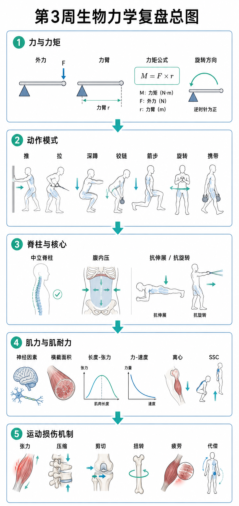

Day 21 · 第3周复盘-生物力学
一句话总结
第3周不是 3 篇散课，而是同一套逻辑换 3 个角度看: 外力先变成力矩，力矩再落到动作模式，动作模式由脊柱和核心接住，最后再由神经、肌肉和组织耐受决定能不能撑住。会串链，就能同时看懂训练成绩和受伤风险。

核心要点
-
力矩与杠杆: 力不只看大小，还要看作用点离关节多远，力臂越长，关节力矩越大。
先抓结论: 训练里最值钱的不是“硬拽”，而是让力臂变短、动作轨迹更贴身、杠杆更有利。真实例子
字面意思
力矩 = 力 × 力臂。力是推拉大小，力臂是垂直距离。
大白话
同样拿门把，离铰链越远越好开门，因为你手的“杆”更长。
训练含义
杠铃离身体越远，腰椎、髋和肩承受的外力矩就越大，动作更难稳。
硬拉里杠铃贴近小腿，腰更省力；同样的重量，如果杠铃前飘，腰背要替身体多扛力矩。卧推中肘部外展过大，肩关节力矩也会变大。
常见误解❌以为力越大就一定越难。✅其实关键是力臂，轻重量也可能因为姿势差而变成高力矩挑战。
-
动作模式: 推、拉、深蹲、铰链、箭步、旋转、携带，是力学任务，不是肌肉清单。
先抓结论: 先认动作，再找主力肌和稳定肌。别一上来只背肌肉名。
训练含义模式 主问题 训练线索 推 / 拉 力量是离开身体还是靠近身体? 卧推、俯卧撑、划船、引体。 深蹲 / 铰链 是髋膝踝一起下去，还是髋主导折叠? 深蹲更像下沉，铰链更像坐屁股向后。 箭步 / 旋转 / 携带 单腿、转体或抗偏移能不能稳住? 弓步、转体、农夫走、单侧提壶铃走。 动作模式分析顺序很固定: 先看关节怎么动，再看谁跨过关节，再看谁在稳住躯干。这样不会把“动作差”误判成“某块肌肉弱”。
常见误解❌以为所有动作都在练同一块大肌肉。✅其实同样是下肢动作，深蹲、硬拉、弓步、携带的受力任务完全不同。
-
脊柱与核心: 核心不是卷腹，而是把中立脊柱、腹内压和四抗稳定接起来。
先抓结论: 核心的主业是稳住位置，不是一直做大幅度屈曲。真实例子
中立脊柱
保留自然曲度，让压力分散到椎体、椎间盘和肌肉，而不是挤到一处。
腹内压
吸气撑开腹壁和侧腰，像躯干内部压力罐，帮脊柱抗压和抗弯。
四抗
抗伸展、抗屈曲、抗旋转、抗侧屈，是核心训练的基本任务单。
深蹲底部骨盆突然后卷、硬拉起拉时腰先圆、划船时胸椎乱塌，都是核心接力失败，不只是腹肌不够强。
训练含义先学呼吸支撑、死虫、鸟狗、Pallof press，再上大重量。腰带只是外壁，不是替代核心。
-
肌力与肌耐力: 神经因素、横截面积、长度-张力、力-速度、离心和 SSC，一起决定输出上限。
先抓结论: 新手力量先涨，多半先是神经学会更会用现有肌肉，不一定先长肌肉。
真实例子因素 一句话 训练看点 神经因素 募集更多运动单位，发放更快更稳。 动作更协调、启动更快、发力更集中。 横截面积 肌肉底盘越大，潜在产力越高。 力量潜力，不等于动作成绩自动上涨。 长度-张力 太短或太长都不占便宜，中间区间最强。 关节角度变了，发力感也会变。 力-速度 向心越快，能产生的力量通常越小。 爆发训练不能练成疲劳堆量。 离心阶段下放杠铃、下楼和落地刹车时，肌肉能承受更高张力；SSC 则是快速拉长后立刻缩短，把弹性势能和牵张反射接上。
常见误解❌以为离心就是“没发力”。✅其实离心常是高张力刹车，而且可承受的负荷往往比向心更高。
-
损伤机制: 看峰值还是累计，看哪种力在叠加，不是只看“疼不疼”。
先抓结论: 急性损伤看单次峰值，过度使用看重复累计；剪切、压缩、张力和扭转常一起出现。真实例子
剪切
层与层平行错位，像扑克牌上下层推开。
压缩
两端挤压，关节和椎间盘最常见。
张力 / 扭转
被拉长和被拧动，变向、落地、旋转里很常见。
ACL 风险常见于膝内扣、减速和旋转叠加；跑量突然翻倍，跟腱和胫骨可能先出现过度使用问题，再逐渐变成真实损伤。
训练含义看风险不是先问“练没练到位”，而是先问“组织能不能扛住当前剂量、动作和疲劳”。
-
易混点: 开链/闭链、向心/离心/等长、三类杠杆，经常一起考。
考试抓手概念 常见错法 正确抓手 开链 vs 闭链 只背名词，不看远端是否固定。 远端固定就是闭链，远端自由就是开链。 向心 / 离心 / 等长 把“下放”全叫向心。 向心是变短，离心是被拉长但仍发力，等长是不变长短。 三类杠杆 只记哪个最省力。 看支点、阻力、动力谁在中间，人体常是第三类杠杆。 题干出现“膝内扣、减速、落地”先想损伤机制；出现“力量先于肌肥大”先想神经适应；出现“离心更能扛”先想力-速度曲线的离心段。
-
训练决策: 先改路径，再调剂量，最后谈专项速度和难度。
先抓结论: 动作、负荷、休息和疲劳管理，比单纯“狠狠干”更决定成绩和安全。实操落点
动作
杠铃贴身、躯干稳定、对线清楚，先让力走对路。
剂量
重量、次数、速度、组间休息，决定主要适应。
停止信号
速度明显掉、动作变形、疼痛改样，就该降级或停组。
增肌看足够训练量和接近力竭的张力；爆发看高速度和低疲劳；耐力看重复输出和恢复；康复看稳定、耐受和逐步回归。
常见误解❌以为训练只有“更重”才算进步。✅真正进步是让动作更稳、负荷更合适、恢复更快。
常见误区
❌很多人以为力大就一定赢。✅其实力臂和动作轨迹能把小重量放大成大难度。
❌很多人以为核心就是腹肌酸。✅核心更重要的是抗伸展、抗旋转和抗侧屈。
❌很多人以为受伤只看“有没有撞到”。✅过度使用、代偿和疲劳同样能把组织推到失控。
记忆口诀
力臂一长力矩大，动作先分推拉家；脊柱中立腹压撑，神经肌肉一起加；峰值看急伤，累计看疲劳，剪压张扭别混答。
翻转卡复习
实操关联
- 增肌: 先让动作轨迹和力臂稳定，再谈靠近力竭的训练量。
- 减脂: 疲劳下动作变形最常见，循环训练别把质量换成数量。
- 爆发: 练高速度前先练减速和落地，不然 SSC 只会变成失控反弹。
- 耐力: 重复输出要看肌耐力、恢复和动作经济性，不只看意志力。
- 康复: 先恢复中立脊柱、呼吸支撑和负荷耐受，再回专项速度。
- 考试: 见到力矩、杠杆、SSC、ACL、腹内压，优先串到今天这条生物力学链。